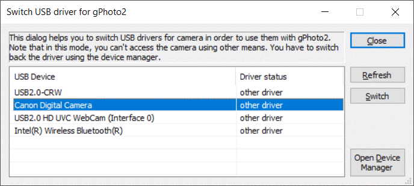
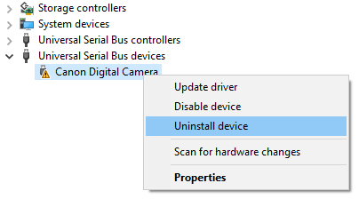

RemotePhotoTool can use the libgphoto2 libraries to access even more camera models. libgphoto2 uses direct USB communication to talk to the cameras. For this, a special USB driver needs to be installed for the camera. Here's how to install and unstall the driver.
Using Zadig
The USB driver that is used by libgphoto2 is "WinUSB". The tool "Zadig" can configure which devices use the Windows-provided USB driver or the "WinUSB" driver. Note that while the driver is active, you can't use the device normally. The Zadig tool can be downloaded here: Zadig
The tool shows all connected USB devices and their installed drivers. You may have to set the flag "List All Devices" in the options menu to show all devices. The combobox at the top currently shows a "Canon Digital Camera". The current driver is named "WUDFWpdMtp", which is a Windows driver. To select the proper driver for libgphoto2, select "WinUSB" using the up and down arrows, as shown in the screenshot. When ready, press the "Replace Driver" button. The action may take a several seconds.
Using RemotePhotoTool
RemotePhotoTool also offers a simplified dialog that also lists the connected devices. Open this dialog by clicking on the "Switch USB driver" on the camera connect dialog. The list refreshes every second. Select a device and click on the "Switch" button. After several seconds, the driver status of the device should switch to "gPhoto2 compatible" and can be used in RemotePhotoTool.

Uninstalling the USB driver
Unfortunately the Zadig tool doesn't provide a way to go back to the original Windows driver. Only with the original driver enables to show the camera's file system in Windows Explorer, or use other remote tools. Start the Device Manager by pressing the Windows key and start typing "device manager":
The Device Manager lists all connected USB devices. There you can right-click on the device and select "Uninstall".

In the next dialog, select "Delete the driver software for this device".
After this, re-connect the device so that Windows installs the original driver. For more infos, follow this link: Help, Zadig replaced the driver for the wrong device! How do I restore it?